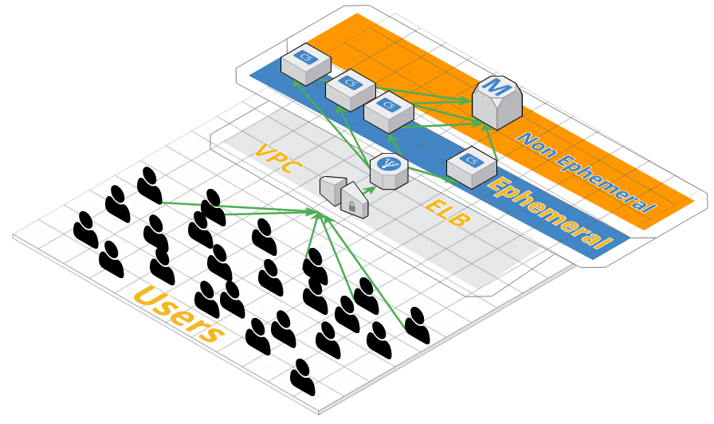

class: center, middle # **12 Factor App** ### A Methodology for building **Cloud Native** Apps --- ## 12 Factor App The **12 Factor App** methodology was created by Heroku as a series of best practices for deploying apps on the cloud. --- ## **CloudNative** Applications ### Yes, It's a buzzword. "Cloud-native is an approach to building and running applications that fully exploits the advantage of the cloud computing delivery model" -- What Advantages? * Nearly limitless computing power * On demand infrastructure * Faster time to market through automation --- ## **Cloud Native** vs. Traditional ### A Comparision -- Traditional - A single server serves an application. -- **Cloud Native** - Multiple (perhaps 100's) servers serve an application. -- ### Lifespan -- Traditional - The application lives on a server for a long time (years). -- **Cloud Native** - The application could live on a serve for a short time (hours). -- ###Scale -- Traditional - The bigger server you buy, the more traffic you can handle. -- **Cloud Native** - You can handle any traffic any time. --- ### The Twelve Factors 1. Codebase 2. Dependencies 3. Config 4. Backing Services 5. Build, Release, Run 6. Processes 7. Port Binding 8. Concurrency 9. Disposability 10. Dev/prod Parity 11. Logs 12. Admin Processes --- ## **Twelve Factor App** - Scalability ### Creating a Cloud Native app scales 4. Backing Services 6. Processes 8. Concurrency 9. Disposability 11. Logs --- ## **Twelve Factor App** - Maintainability ### Creating a **stable** Cloud Native app under constant change. 1. Codebase 2. Dependencies 3. Config 5. Build, release, run 6. Port Binding 10. Dev/prod parity 12. Admin Processes --- ## Scaling **Twelve Factor Apps** -- ### **Ephemeral** Servers and Non Ephemeral Servers -- <br/> **Ephemeral** Servers are non permanent * Temporary, "Throw Away" Servers. * Any server that scales should be ephemeral. -- <br/> Non Ephemeral Servers are semi-permanent * Don't replace them unless you have to. * Your database is non-ephemeral because it is a permanent data store. --- ## **Ephemeral** by Example </img> --- ## **Ephemeral** == Scalable 1. In order for a machine to scale it needs to be ephemeral. -- 2. Each machine has to look exactly the same at the others. -- 3. Each machine can contain no state. -- <br> ### Here's how to make it happen. --- ## 4. Backing Services A **backing service** is any service that is shared among application servers. * Permanent Datastores - Databases * Caching and Temporary Storage - ElasticSearch * General Shared Utilities - Sending Email, Message Queues, etc. -- ### Example ElasticSearch - Your server could seamlessly interchange a local ElasticSearch and a remote ElasticSearch on AWS. --- ## 6. Stateless Processes **Stateless Processes** is the "leave no trace* camping principle for servers. *Note: You can leave a trace, but it won't matter because it might not be there in the next request* -- <br> ###--> Request Amnesia## * Each request has a fresh start. Anything that was on the server last time is gone. -- Here's why: -- * Your app is most likely running multiple app servers. Your request is randomly distributed to any app server. -- *Note: When we say stateless, we are referring to the disk. Memory is except from the stateless rule. --- ## 8. Concurrency Applications should scale horizonatally. -- (This is principle is pretty apparent) --- ## 9. Disposability Autoscaling means that servers can rapidly be spun up... and down.. -- * Your machine should be ephemeral. After any request, your machine could be spun down through autocaling. All state on the machine is lost. -- * Conversely, your machine needs to spin up as quickly as possible. Your application can be setup to autoscale, but it is at risk while it is waiting for machines to intialize. --- ## 11. Logs Logs are very important piece of state that have to be managed correctly. -- * Logs fill up hard drives and kill applications. * Traditionally, logs have been "rotated" (i.e. periodically shipped to another server). -- ### **Twelve Factor** says that logs should never even touch the server. -- * The best way to handle logs is to treat them as event streams. * Logs are treated as event streams and are streamed directly to a log handler like Splunk, Kibana, etc. --- ## 1. Codebase Each server should correpsond to one codebase. -- As applications get bigger... ### **Conway's Law** - The architecture of a codebase eventually mirrors the organizational structure of the teams producing the code. -- * Releasing an application becames very complicated if there are the release of several sub applications have to be coordinated. -- ### This is called the **Monolith** -- **Twelve Factor** encourages a one to one relationship between an app and an app server. -- * **Monoliths** can be broken down by extracing code into shareable libraries or microservices. --- ### **Microservices** are the new library. A **Microservice** is an application in the form of an API that does one specific task. -- * Each **Microservice** returns one piece of data that contributes to an overall page or API. -- * The advantage of microservices over libraries is that APIs can be updated real time. Libraries require everything to be recompiled. -- Netflix and Amazon heavily rely on Microservices. For example: -- * Amazon's "Suggested Products" is a microservice that returns relevant products for a specific user. * Amazon's Checkout button is a microservice designed specifically for processing orders. * Amazon's "Reviews" section is a microservice that returns reviews for a product. --- ## 2. Dependencies An app should contain all of the dependencies required to run. -- * This means more than just pulling dependencies from Maven and npm. -- * The app should not depend upon the server for anything. -- * The app contains everything including the app server. -- <br> -- * Modern web app servers like Spring Boot package the web server inside the jar. `java -jar your-app.jar` is all it takes to run. --- ## 3. Config **Twelve Factor** recommends that all configuration and credentials be separated from the code. -- Configuration and credentials include: -- * URLs to backing services -- * Credentials to AWS, Google Maps, Twitter, Facebook, etc. -- ### Treat your app as if it could be open sourced at any point. -- * Your app will need to function across a variety environments (dev, testing, staging, production). Each environment will have it's own configuration and credential. -- **Environment Variables** are considered a best practice for maintaining configuration. --- ## 5. Build, release, run Your app should be built first then released. -- * Build phase is packaging the app so that it can be deployed on a server (Remember to include all of the dependencies, including the web server) -- * A build is an attempt to create a release. A release can have many builds. -- * Each release is tagged with a unique number so that it can reerenced in the future. --- ## 7. Port Binding In traditional infrastructure, many applications ran on a single machine. This required carefully mapping ports to each application. -- In **Cloud Native** applications, one application runs on one machine. This reduces the complexity of setup. --- ## 12. Admin Processes Avoid every having to run a script on a server. -- ### **Immutable** environments produce expected results. Mutable environments potentially produce unexpected results. -- * When you run a script on a server, you are changing it's internal state. **Your server should be stateless**. -- * You may have 20+ servers operating at a time. How do you ensure that the script runs at the exact same time as the rest of the machines. -- Solution: -- * Everytime you need to change a server, throw away the old one and make a new one from scratch. -- * Create RESTful endpoints to run the task. -- For example, if you need to reindex Elasticsearch, create an endpoint `/_cluster/reindex` to that performs the reindex task. --- ## 10. Dev / Prod Parity Each environment (development, testing, staging) should be as similar as possible to production. -- This means: -- * You use the **same** databases. -- * You use the **same** backing services. -- * You use the **same** server configuration. -- * They're all backing services. Just swap out the URL to a dev or staging service. -- ### Unit tests help prevent errors in logic. Full integration tests check **everything else**. --- ## 10. Dev / Prod Parity (cont) Environments: -- * **Production** - this is the real deal. You can't test or even access this system. Everything has to be perfect. -- * **Staging** - this system is a mirror image of production. You are working with a copy of live data. -- * **Test** - this system checks that everyone's code works correctly **together**. -- * **Development** - this is your local environment. --- ## 10. Dev/Prod Parity (cont) ### Errors in production are tough to **track down** and cause **data loss**. -- **Every step** has to be automated. -- * Ideally, the setup script that you use on your local environment is exactly the same the setup script that you use for production. -- * You will likely hand off packaged code to run on a machine that you will never touch. **That's why DevOps is so important**. * You will need to script your deployment so that you can have confidence it will run correctly on production. --- ### Which of the **The Twelve Factors** principles does Airwaze meet? **Codebase** - *one app from one codebase.* -- * ✅ Good! The Airwaze codebase produces one artifact that is deployed on one server. -- **Dependencies** - *the app has **everything** it needs to run* -- * ✅ Good! SpringBoot packages a the TomCat webserver into the executable jar file. -- **Config** - *credentials, URLS, etc. can **easily be changed** for each environment* -- * ✅ Good! Airwaze has a `application.properties` for Dev and a `application-test.properties` for test. -- * ❗ Improve. The URL, username, and password of our app are hard coded. Ideally, these should be environment variables. --- ### Which of the **The Twelve Factors** principles does Airwaze meet? **Backing Services** - *functionality your app depends on should be bound by a URL* -- * ✅ Good! The database can easily be swapped out for a database on another machine by inputting a different URL. -- * ❗ Improve. ElasticSearch is embedded and cannot easily be swapped out for another machine. -- **Build, Release, Run** - *code is built and released before runnig on the server* -- * ✅ Good! Code is built and packaged as a jar using Gradle. -- * ❗ Improve. We should assign a unique ID to each packaged jar so that it can be tracked back to the commit. --- **Processes** - *servers run as stateless processes. i.e **request amnesia** * -- * ✅ Good! While the app server is running, nothing is accessed from the file system. -- **Port Binding** - *servers can be bound to any port... typically one port per server* -- * ✅ Good! Airwaze can even have the port configured via an environment variable. -- **Concurrency** - *applications scale **horizontally**... instead of servers getting bigger* -- * ✅ Good! We have multiple servers behing an ELB. -- * ❗ Improve. Currently our servers do not scale up if traffic increases. --- **Disposability** - *servers can be spun up and thrown away **quickly*** -- * ✅ Good! Airwaze stores nothing on the local file system. SpringBoot spins up in under a minute. -- **Dev/prod Parity** - *dev, test, and staging closely **mirror** production* -- * ❗ Improve. Currently, we have to manually configure a new environment. It should be automatically spun up. -- **Logs** - *logs are treated like output streams and are **never** stored on the server* -- * ❗ Improve. Currently logs are stored on the machine. These logs should immediately be streamed to a log server. -- **Admin Processes** - *never run scripts on a machine, instead create an API endpoint* -- * ✅ Good! We can reuse our `reindex` elasticsearch REST endpoint from Zika on our airwaze app. --- #Questions? ---